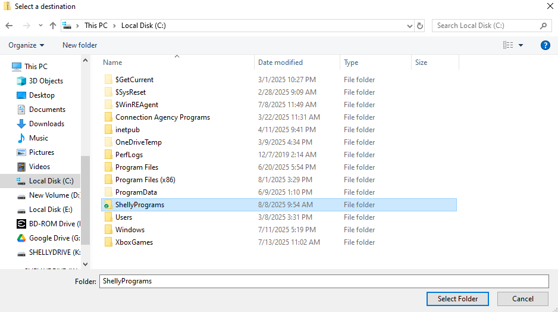

First you want to open your file explorer app. Then go to This PC, and double click on Local Disk (C:).
Then you want to right click anywhere where there isn't a file to bring up this menu. Then click New and some options should come up. Click New file.
When you make a new file, name it EXACTLY with no space or different capitalization, "ShellyPrograms". This step is VERY important. If you do it wrong, none of your programs will work.
Now your ShellyPrograms Folder is set up. Now go download your program from the main site. When you click on your program, it will download. Go to your downloads menu in google chrome and you will see a zip file that just got downloaded to your computer. Click on the little file icon to the right of the name.
It should bring up file explorer. You will see your program at the top of your downloads folder. Now, go into that zip folder by double-clicking on it. You should see a file that has the same name but is not zipped.
Once you are inside, right click on a blank part of the file explorer app. you should see a small menu come up. Click the extract all button at the bottom of the menu.
You should see a menu with a file location come up. Click browse
Once you click that button go to your ShellyPrograms Folder by going to This PC, Local Disk (C:), ShellyPrograms, and then hit Select Folder.
If everything has been done right you should see C:\ShellyPrograms in your extracting menu.
Now hit the extract button. Once it's done downloading, if you go to your ShellyPrograms Folder you should see your new program. Now it should work just fine. Congratulations! You're All set up. Now for other programs you can just extract the zip file to ShellyPrograms by repeating the last 6 steps. Go have some fun now with your new program.